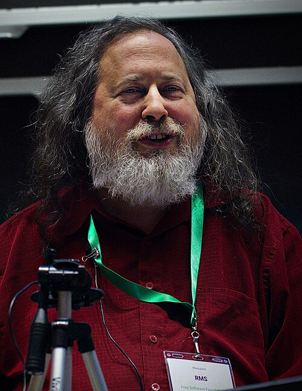
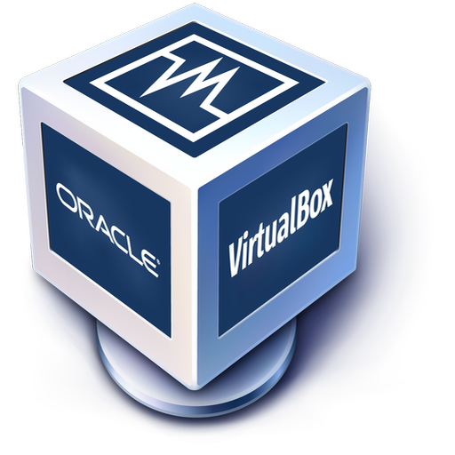

🎯 Ce que tu sauras à la fin
L'histoire
Expliquer d'où vient Linux et pourquoi on dit parfois « GNU/Linux ».
Les distributions
Situer Ubuntu parmi les grandes familles et comprendre les versions LTS.
La virtualisation
Savoir ce que fait VirtualBox et bien régler une machine virtuelle.
Le disque
Comprendre partitions, UEFI, GPT, ext4, swap et le démarrage.
Qu'est-ce qu'un système d'exploitation ?
Un ordinateur, c'est d'abord du matériel : un processeur, de la mémoire, un disque, une carte réseau. Aucun programme ne parle directement à ce matériel. Entre les deux, il y a le système d'exploitation (OS, Operating System), qui joue le rôle de chef d'orchestre :
- il partage le processeur entre les programmes qui tournent en même temps ;
- il distribue la mémoire et empêche un programme de lire celle d'un autre ;
- il organise les fichiers sur le disque ;
- il pilote les périphériques (clavier, écran, réseau, USB…) ;
- il contrôle qui a le droit de faire quoi (utilisateurs, permissions).
Le cœur de l'OS s'appelle le noyau (kernel). Linux, au sens strict, c'est uniquement ce noyau. Autour de lui, on trouve les outils qui permettent de l'utiliser : le shell, les commandes, les bibliothèques, puis les applications.
Linux = le noyau. Ce que tu as installé (Ubuntu) est une distribution : le noyau Linux plus des milliers d'outils et d'applications assemblés et testés ensemble.
De Unix à Linux : une histoire en trois actes
Commence par la version courte en vidéo, puis plonge dans les détails.

Acte 1 — Unix, l'ancêtre (1969)
À la fin des années 60, Ken Thompson et Dennis Ritchie écrivent Unix aux laboratoires Bell. En 1973, ils le réécrivent dans un langage qu'ils viennent d'inventer, le C. C'est une révolution : un système écrit en C peut être porté sur d'autres machines. Unix se répand dans les universités et les entreprises, mais il appartient à AT&T et sa licence devient de plus en plus chère et restrictive.
Unix apporte des idées qu'on retrouve encore aujourd'hui dans Linux, et que tu vas pratiquer tout au long de ce carnet :
- Tout est fichier : un disque, un clavier, un processus, tout se manipule comme un fichier.
- Des petits outils qui font une seule chose, et bien.
- On les combine : la sortie d'un programme devient l'entrée du suivant (le fameux
|). - Du texte partout : configuration, journaux, échanges entre programmes.
Acte 2 — GNU et le logiciel libre (1983)
Richard Stallman, chercheur au MIT, veut un système libre : que chacun puisse utiliser, étudier, modifier et
redistribuer. En 1983, il annonce le projet GNU (acronyme récursif : GNU's Not Unix), un clone complet
d'Unix. En quelques années, GNU produit l'essentiel : le compilateur gcc, l'éditeur Emacs, le shell bash,
les commandes de base (ls, cp, grep…). Il ne manque qu'une pièce, la plus difficile : le noyau.
Acte 3 — Linux, « juste un hobby » (1991)
En 1991, Linus Torvalds, 21 ans, étudiant à Helsinki, écrit un petit noyau pour son PC 386. Le 25 août, il poste ce message devenu légendaire sur un forum Usenet :
From: torvalds@klaava.Helsinki.FI (Linus Benedict Torvalds)
Newsgroups: comp.os.minix
Date: 25 Aug 91 Hello everybody out there using minix –
I'm doing a (free) operating system (just a hobby, won't be big and professional like gnu) for 386(486) AT clones. […]
En 1992, il place Linux sous la licence GPL de GNU. Le noyau de Linus et les outils de GNU s'assemblent comme deux pièces de puzzle : le premier système d'exploitation entièrement libre est né.
Linus voulait appeler son noyau « Freax » (free + freak + x). C'est l'administrateur du serveur FTP qui l'a
rangé dans un dossier nommé linux… et le nom est resté. La mascotte Tux, un manchot, a été
dessinée par Larry Ewing en 1996 : Linus avait raconté avoir été mordu par un manchot dans un zoo.
La suite en accéléré
Naissance d'Unix
Ken Thompson et Dennis Ritchie aux Bell Labs.
Annonce du projet GNU
Richard Stallman veut un Unix entièrement libre.
Linux 0.01
Linus Torvalds publie la première version de son noyau.
Debian et Slackware
Les premières grandes distributions apparaissent.
Red Hat
Linux entre dans les entreprises avec du support commercial.
Ubuntu 4.10
Canonical lance une distribution facile, basée sur Debian.
Git
Linus crée Git pour gérer le code du noyau.
Android
Le premier téléphone Android sort. Son noyau est Linux.
100 % des supercalculateurs
Depuis novembre 2017, les 500 ordinateurs les plus puissants du monde tournent tous sous Linux.
Partout
Serveurs web, cloud, conteneurs, box internet, voitures, téléviseurs, Steam Deck, Raspberry Pi…
Logiciel libre, open source et licences
Linux est un logiciel libre. Pour Stallman, un logiciel est libre s'il garantit quatre libertés :
Utiliser
Exécuter le programme comme tu veux, pour n'importe quel usage.
Étudier
Lire le code source pour comprendre comment il fonctionne.
Partager
Redistribuer des copies à qui tu veux.
Améliorer
Modifier le programme et publier tes versions modifiées.
(Oui, les informaticiens comptent à partir de zéro. Tu t'y habitueras.)
La licence GPL ajoute une règle astucieuse, le copyleft : si tu redistribues une version modifiée, tu dois la publier sous la même licence. Personne ne peut donc « refermer » Linux. C'est pour ça que des entreprises concurrentes (Google, Microsoft, Intel, Red Hat…) contribuent toutes au même noyau.
En anglais, free veut dire à la fois « libre » et « gratuit ». Stallman répète : « free as in free speech, not as in free beer ». On peut vendre du logiciel libre (Red Hat le fait très bien). Le terme open source, apparu en 1998, désigne en pratique les mêmes logiciels, avec un discours plus orienté entreprise.
Les distributions : un noyau, mille visages
Personne n'installe « juste Linux ». On installe une distribution (ou distro), qui assemble :
Il existe des centaines de distributions, mais presque toutes descendent de quelques grandes familles. Ce qui les distingue surtout : leur gestionnaire de paquets, leur rythme de mise à jour et leur public.
Famille Debian
Stable et immense. Paquets .deb, outil apt.
Famille Red Hat
Le standard en entreprise. Paquets .rpm, outil dnf.
Famille Arch
Minimaliste, toujours à jour (rolling release). Outil pacman.
Famille SUSE
Très présente en Europe et en entreprise. Outil zypper.
Les indépendantes
Pour des usages précis : conteneurs ultra-légers, compilation sur mesure…
C'est la distribution la plus utilisée sur les postes de travail et dans le cloud. La documentation et les réponses en ligne
sont innombrables. Et tout ce que tu apprends sur Ubuntu marche sur Debian, et à 90 % sur les autres familles :
ls, grep, systemctl ou ssh sont les mêmes partout. Seul le gestionnaire de paquets change vraiment.
Ubuntu sous la loupe
Ubuntu est éditée par l'entreprise britannique Canonical, fondée par Mark Shuttleworth. Le mot vient d'une philosophie d'Afrique australe que l'on traduit souvent par « je suis parce que nous sommes ».
Lire un numéro de version
Une nouvelle version sort tous les six mois, en avril et en octobre. Le numéro est simplement année.mois :
24.04 LTS # sortie en avril (04) 2024 (24) Noble Numbat # nom de code : un adjectif + un animal, même initiale noble # le nom court, utilisé dans les fichiers de configuration
LTS ou pas LTS ?
Une version sur quatre, celle d'avril des années paires, est une LTS (Long Term Support) : elle reçoit des correctifs de sécurité pendant des années. Les autres ne sont supportées que 9 mois.
| Type | Exemple | Support standard | Pour qui ? |
|---|---|---|---|
| LTS | 24.04 Noble Numbat | 5 ans (jusqu'en mai 2029), prolongeable jusqu'à 10 ans et plus avec Ubuntu Pro | Serveurs, entreprises, apprentissage |
| Intermédiaire | 24.10, 25.04, 25.10 | 9 mois | Curieux qui veulent les dernières nouveautés |
Ton choix de la 24.04 LTS est donc le bon : c'est une version stable, très documentée, et que tu retrouveras sur de nombreux serveurs en production pendant des années. (La LTS suivante, 26.04, est sortie en avril 2026 : tout ce que tu apprends ici s'y applique.)
Les « saveurs » d'Ubuntu
Ubuntu existe en plusieurs saveurs officielles. Le système est le même, seul l'environnement de bureau change :
| Saveur | Bureau | Style |
|---|---|---|
| Ubuntu (ta version) | GNOME | Moderne, épuré, barre latérale à gauche |
| Kubuntu | KDE Plasma | Proche de Windows, très personnalisable |
| Xubuntu / Lubuntu | Xfce / LXQt | Légers, pour machines modestes |
| Ubuntu Server | aucun | Uniquement le terminal : c'est le standard des serveurs |
Sous Windows, l'interface graphique fait partie du système. Sous Linux, c'est un programme comme un autre : on peut en changer, en installer plusieurs, ou s'en passer complètement. La plupart des serveurs Linux du monde n'ont aucune interface graphique. C'est pour ça que ce carnet insiste autant sur le terminal.
Les différentes façons d'installer Linux
Avant d'entrer dans la virtualisation, voici toutes les options possibles et pourquoi la VM est idéale pour apprendre :
| Méthode | Principe | Risque pour Windows | Performances | Idéal pour |
|---|---|---|---|---|
| Machine virtuelle ✅ | Un ordinateur simulé dans une fenêtre | Aucun | Bonnes | Apprendre, tester, casser sans peur |
| Live USB | Démarrer Linux depuis une clé, sans rien installer | Aucun | Moyennes | Essayer, dépanner un PC |
| WSL | Linux intégré à Windows (Windows Subsystem for Linux) | Aucun | Très bonnes | Développeurs sous Windows (pas d'interface graphique complète) |
| Dual boot | Windows et Linux sur le même disque, choix au démarrage | Moyen | Maximales | Usage quotidien des deux systèmes |
| Installation complète | Linux remplace Windows | Windows effacé | Maximales | Passer à Linux pour de bon |
| Cloud | Louer un serveur Linux chez AWS, OVH, Hetzner… | Aucun | Variables | Héberger des services, s'entraîner sur un vrai serveur |
Comprendre la virtualisation

Une machine virtuelle (VM) est un ordinateur entièrement simulé par logiciel. Ubuntu, dans la VM, croit tourner sur un vrai PC : il voit un processeur, de la RAM, un disque, une carte réseau. En réalité, tout cela est fourni par VirtualBox, qui découpe une partie des ressources de ton vrai PC.
Le vocabulaire
- Hôte (host)
- Le vrai ordinateur et son système (Windows, macOS ou Linux).
- Invité (guest)
- Le système qui tourne dans la VM : Ubuntu 24.04.
- Hyperviseur
- Le logiciel qui crée et fait tourner les VM : VirtualBox.
- Disque virtuel
- Un gros fichier sur ton disque Windows (
.vdi) que la VM voit comme un disque dur entier. - Image ISO
- Un fichier qui contient le « DVD » d'installation d'Ubuntu.
Deux types d'hyperviseurs
Les processeurs modernes ont des instructions dédiées à la virtualisation : Intel VT-x et AMD-V. Le code d'Ubuntu s'exécute directement sur ton vrai processeur ; VirtualBox n'intervient que pour les opérations sensibles. Ces instructions doivent être activées dans le BIOS/UEFI de ton PC (c'est le cas par défaut sur la plupart des machines récentes).
Bien dimensionner sa VM
Règle d'or : ne jamais donner à la VM plus de la moitié de la RAM ou des cœurs de ton PC, sinon le système hôte étouffe et les deux deviennent lents.
| Réglage | Minimum Ubuntu 24.04 | Recommandé pour apprendre | Pourquoi |
|---|---|---|---|
| Mémoire vive | 4 Go | 4 à 8 Go | GNOME et Firefox aiment la RAM |
| Processeurs | 2 | 2 à 4 | Interface plus fluide, installations plus rapides |
| Disque | 25 Go | 40 à 60 Go, dynamique | Un disque « dynamique » ne prend sur Windows que la place réellement utilisée |
| Mémoire vidéo | 16 Mo | 128 Mo, contrôleur VMSVGA | Affichage fluide, redimensionnement automatique |
| Réseau | NAT (par défaut) | Internet fonctionne immédiatement | |
Les modes réseau de VirtualBox
Pour l'instant, le mode NAT suffit. Mais tu croiseras les autres plus tard (notamment au module SSH), alors voici la carte complète :
| Mode | VM → Internet | PC → VM | VM ↔ VM | Usage typique |
|---|---|---|---|---|
| NAT | oui | via redirection de port | non | Par défaut, le plus simple |
| Réseau NAT | oui | via redirection de port | oui | Plusieurs VM qui se parlent |
| Accès par pont | oui | oui | oui | La VM devient une vraie machine sur ta box |
| Réseau privé hôte | non | oui | oui | Labo isolé entre ton PC et tes VM |
| Réseau interne | non | non | oui | Labo totalement isolé |
Disques, partitions et démarrage
Pendant l'installation, Ubuntu va te parler de partitions. Même si tu choisis « Effacer le disque » (sans risque dans une VM : c'est le disque virtuel qui est effacé, pas celui de ton PC), il faut comprendre ce qui se passe.
Firmware : BIOS ou UEFI
Quand tu allumes un PC, le premier programme qui s'exécute est le firmware, inscrit sur la carte mère. Il en existe deux générations :
BIOS (legacy)
Depuis 1981. Lit le tout premier secteur du disque (le MBR) et exécute ce qu'il y trouve. Limité, mais encore très répandu dans les VM.
UEFI
Le remplaçant moderne. Lit une petite partition dédiée (l'ESP, en FAT32) qui contient les chargeurs de démarrage. Gère le Secure Boot.
Table de partitions : MBR ou GPT
Un disque est découpé en partitions, des zones indépendantes. Le plan de ce découpage, c'est la table de partitions :
| MBR (ancien) | GPT (moderne) | |
|---|---|---|
| Taille max du disque | 2 To | 9,4 milliards de To |
| Nombre de partitions | 4 principales (ou 3 + 1 étendue) | 128 par défaut |
| Robustesse | Une seule copie | Copie de secours en fin de disque |
| Associé à | BIOS | UEFI (fonctionne aussi avec BIOS) |
Systèmes de fichiers
Une partition vide est inutilisable. On la formate avec un système de fichiers, qui définit comment les fichiers, les dossiers et les droits sont rangés. Sous Windows tu connais NTFS ; sous Linux :
| Système | Points forts | Où on le trouve |
|---|---|---|
ext4 | Robuste, éprouvé, rapide | Par défaut sur Ubuntu et Debian |
xfs | Excellent avec les gros fichiers | Par défaut sur Red Hat / Rocky |
btrfs | Instantanés, compression | Par défaut sur Fedora et openSUSE |
zfs | Intégrité des données, instantanés | Option avancée d'Ubuntu, serveurs de stockage |
vfat (FAT32) | Lisible par tous les systèmes | Partition EFI, clés USB |
Points de montage : pas de « C: » sous Linux
Sous Windows, chaque partition a sa lettre (C:, D:). Sous Linux, il n'y a qu'une seule arborescence
qui commence à la racine /. Chaque partition est « accrochée » (montée) dans un dossier de cette arborescence.
Le swap est un espace disque utilisé comme mémoire de secours quand la RAM est pleine (c'est l'équivalent du
pagefile.sys de Windows). Autrefois c'était une partition dédiée ; Ubuntu utilise désormais simplement un fichier /swap.img.
Ce qui se passe quand tu allumes la VM
Chacune de ces étapes sera détaillée au module 10. Pour l'instant, retiens que GRUB est le menu qui permet de choisir quel système (ou quel noyau) démarrer, et que systemd est le « premier processus » dont tous les autres descendent.
Installer Ubuntu 24.04 pas à pas
Étape A — Créer la VM dans VirtualBox
- Télécharger l'ISO
Sur ubuntu.com/download/desktop, prendre la version 24.04 LTS (un fichier d'environ 6 Go, nommé par exemple
ubuntu-24.04.x-desktop-amd64.iso). - Nouvelle machine
Dans VirtualBox : Machine › Nouvelle. Donner un nom (ex.
ubuntu) et sélectionner l'image ISO. VirtualBox détecte automatiquement « Linux / Ubuntu (64-bit) ». - Installation automatique ou manuelle
VirtualBox propose une installation automatique (Unattended Installation) : tu saisis nom d'utilisateur, mot de passe et nom de machine, et il fait tout le reste. Si tu coches « Skip Unattended Installation », c'est toi qui suis l'installateur d'Ubuntu (étape B).
- Matériel
Mémoire et processeurs selon le tableau de dimensionnement plus haut. Cocher Enable EFI est facultatif mais plus proche d'un PC moderne.
- Disque dur virtuel
Créer un disque VDI, dynamiquement alloué (ne pas cocher « Pre-allocate Full Size »), de 40 Go ou plus.
- Finaliser les réglages
Avant de démarrer : Configuration › Affichage › 128 Mo de mémoire vidéo, contrôleur VMSVGA.
Si tu vois Ubuntu s'installer sans rien te demander, VirtualBox est en train de faire une installation automatique.
C'est pratique, mais elle a un piège connu : le compte créé n'est parfois pas autorisé à utiliser sudo
(la commande pour agir en administrateur). Si ça t'arrive, la solution est dans la section Dépannage.
Laisse-la finir sans l'interrompre, même si elle semble bloquée quelques minutes.
Étape B — L'installateur d'Ubuntu (installation manuelle)
Si tu installes toi-même (ou pour une prochaine VM), voici les écrans de l'installateur d'Ubuntu 24.04 :
- Langue
Choisir Français.
- Accessibilité
Options de vision, d'audition, de mobilité. On peut passer.
- Clavier
Français › Français (AZERTY) ou la variante qui correspond à ton clavier. Teste dans le champ prévu.
- Connexion internet
En NAT, la VM utilise automatiquement la connexion de ton PC (« Utiliser une connexion filaire »).
- Essayer ou installer
« Essayer Ubuntu » lance le système en mode live, sans rien écrire sur le disque. Choisir Installer Ubuntu.
- Type d'installation
Interactive (on répond aux questions) ou Automatisée (à partir d'un fichier
autoinstall.yaml, utile en entreprise). Choisir Interactive. - Applications
Sélection par défaut (navigateur et utilitaires) ou Sélection étendue (bureautique, jeux…). La sélection par défaut suffit : on apprendra à installer le reste.
- Logiciels tiers
Pilotes propriétaires (graphique, Wi-Fi) et codecs multimédias. Dans une VM, on peut cocher les codecs ; les pilotes ne servent pas.
- Disque
Effacer le disque et installer Ubuntu. Dans une VM, ça n'efface que le disque virtuel vide. Le bouton « Fonctionnalités avancées » propose LVM, le chiffrement et ZFS : on les étudiera plus tard.
- Compte
Ton nom, le nom de l'ordinateur (ex.
ubuntu), ton identifiant (en minuscules, sans espace, ex.user) et un mot de passe dont tu te souviens : tu le taperas très souvent avecsudo. - Fuseau horaire
Choisir ta ville.
- Récapitulatif puis installation
Relire, cliquer sur Installer, patienter. À la fin : Redémarrer maintenant. Si on te demande de retirer le support d'installation, appuie simplement sur Entrée : VirtualBox éjecte l'ISO tout seul.
Quand tu cliques dans la VM, elle capture la souris et le clavier. Pour les rendre à Windows, appuie sur la touche hôte : par défaut Ctrl droit. Elle sert aussi de raccourci : Ctrl droit + F pour le plein écran, Ctrl droit + T pour un instantané.
Après l'installation : les premiers réflexes
Ouvre un terminal : Ctrl + Alt + T. C'est le premier raccourci à retenir. Tu vois une ligne comme celle-ci, qu'on appelle l'invite de commande (prompt) :
user@ubuntu:~$
| Morceau | Signification |
|---|---|
user | Ton nom d'utilisateur |
ubuntu | Le nom de la machine |
~ | Le dossier où tu te trouves. ~ est un raccourci pour ton dossier personnel, /home/user |
$ | Tu es un utilisateur normal. Si c'était #, tu serais root, l'administrateur tout-puissant |
1. Mettre le système à jour
C'est la toute première chose à faire après une installation, et une habitude à garder :
user@ubuntu:~$ sudo apt update [sudo] Mot de passe de user : # rien ne s'affiche quand tu tapes, c'est normal ! Atteint :1 http://archive.ubuntu.com/ubuntu noble InRelease Réception de :2 http://security.ubuntu.com/ubuntu noble-security InRelease [126 kB] ... 42 paquets peuvent être mis à jour. user@ubuntu:~$ sudo apt upgrade -y
sudo: « exécuter la commande suivante en tant qu'administrateur ». Il demande ton mot de passe.apt update: télécharge la liste des logiciels disponibles (ça n'installe rien).apt upgrade: installe les nouvelles versions. L'option-yrépond « oui » à la confirmation.
Quand sudo demande ton mot de passe, aucun caractère ne s'affiche, pas même des étoiles.
Ce n'est pas un bug : tape-le et appuie sur Entrée.
2. Faire connaissance avec sa machine
La commande hostnamectl affiche la carte d'identité de la machine. Voici une sortie réelle, obtenue dans une VM VirtualBox :
user@ubuntu:~$ hostnamectl Static hostname: ubuntu Icon name: computer-vm Chassis: vm 🖴 Machine ID: 3f6c1e0a9b7d4c2e8a15f0d9c4b2e7a1 Boot ID: 9d2b7c41e8f04a6b9c3e5d1f7a0b8c26 Virtualization: oracle Operating System: Ubuntu 24.04.4 LTS Kernel: Linux 7.0.0-38-generic Architecture: x86-64 Hardware Vendor: innotek GmbH Hardware Model: VirtualBox Firmware Version: VirtualBox Firmware Date: Fri 2006-12-01 Firmware Age: 19y 10month 3w # Les numéros de version et les identifiants seront différents chez toi
| Ligne | Ce qu'elle t'apprend |
|---|---|
Static hostname | Le nom de la machine sur le réseau, celui qu'on retrouve dans l'invite après le @. |
Icon name, Chassis | Le type de machine : vm pour une machine virtuelle (ce serait laptop, desktop ou server sur du vrai matériel). |
Machine ID | Un identifiant unique, créé à l'installation et stocké dans /etc/machine-id. Il ne change jamais. |
Boot ID | Un identifiant tiré au sort à chaque démarrage. Il sert notamment à retrouver les journaux d'un démarrage précis. |
Virtualization | L'hyperviseur détecté : oracle = VirtualBox (édité par Oracle). On verrait kvm, vmware, microsoft (Hyper-V)… Absente sur une vraie machine. |
Operating System | La distribution et sa version exacte. Le dernier chiffre (.4) est la point release : une image d'installation mise à jour, publiée quelques fois au cours de la vie d'une LTS. |
Kernel | La version du noyau Linux. 7.0.0 = version du noyau, 38 = révision d'Ubuntu, generic = la variante standard. |
Architecture | Le type de processeur : x86-64 pour les PC Intel/AMD 64 bits, arm64 pour un Raspberry Pi ou un Mac récent. |
Hardware Vendor, Model | Le fabricant et le modèle de la « carte mère ». Ici, c'est celle simulée par VirtualBox : innotek est l'entreprise allemande qui a créé VirtualBox avant son rachat. |
Firmware Date, Age | Le BIOS virtuel de VirtualBox est daté de 2006 : c'est normal, il n'a jamais besoin d'être mis à jour. D'où cet âge vénérable de près de 20 ans ! |
Ubuntu 24.04 est sortie avec le noyau 6.8. Mais les point releases (24.04.2, 24.04.3, 24.04.4…) installent par défaut un noyau plus récent, dit HWE (Hardware Enablement), pour prendre en charge le matériel récent. Ton numéro de noyau dépend donc de l'image d'installation que tu as utilisée et des mises à jour faites depuis.
D'autres commandes pour explorer sa machine :
user@ubuntu:~$ uname -r # version du noyau seule user@ubuntu:~$ cat /etc/os-release # fiche d'identité de la distribution user@ubuntu:~$ free -h # mémoire vive et swap user@ubuntu:~$ lsblk # disques et partitions user@ubuntu:~$ df -h / # place libre sur la racine user@ubuntu:~$ ip a # cartes réseau et adresses IP
Regarde en particulier la sortie de lsblk : tu devrais y retrouver le disque sda et les partitions
dont on a parlé (/boot/efi et /). La théorie devient concrète !
3. Installer les Additions invité (Guest Additions)
Les Additions invité sont des pilotes VirtualBox qui s'installent dans Ubuntu. Elles apportent : l'écran qui s'adapte à la taille de la fenêtre, le copier-coller entre Windows et la VM, le glisser-déposer et les dossiers partagés.
D'abord, vérifie si elles sont déjà là (l'installation automatique peut les avoir installées) :
user@ubuntu:~$ VBoxClient --version 7.1.x r16xxxx # un numéro de version = installées user@ubuntu:~$ systemctl status vboxadd-service ● vboxadd-service.service - VirtualBox Guest Additions service Active: active (running) # le service tourne
Si VBoxClient répond command not found, les Additions ne sont pas installées. Le test visuel marche aussi :
agrandis la fenêtre de la VM. Si le bureau ne s'adapte pas à la nouvelle taille, il faut les installer.
lsmod | grep vbox ne suffit pas
Le pilote vboxguest est intégré au noyau Linux : Ubuntu le charge dès qu'il détecte VirtualBox, même sans
les Additions invité. Voir une ligne vboxguest dans lsmod prouve seulement que le noyau a reconnu
VirtualBox, pas que les Additions sont installées.
Pour les installer :
# 1. Les outils nécessaires pour compiler les pilotes user@ubuntu:~$ sudo apt install -y build-essential dkms bzip2 linux-headers-$(uname -r) # 2. Dans le menu de la fenêtre VirtualBox : # Périphériques › Insérer l'image CD des Additions invité… # 3. Lancer l'installateur depuis le CD user@ubuntu:~$ cd /media/$USER/VBox_GAs_* user@ubuntu:/media/user/VBox_GAs_7.x$ sudo ./VBoxLinuxAdditions.run # 4. Redémarrer user@ubuntu:~$ sudo reboot
Le « CD des Additions invité » est un fichier image (VBoxGuestAdditions.iso) fourni avec VirtualBox. Le menu
Périphériques se trouve dans la barre de menus de la fenêtre VirtualBox, pas dans Ubuntu. Invisible ?
Tu es en plein écran ou en mode échelonné : Ctrl droit + Origine l'affiche. Une fois inséré, un disque
VBox_GAs_… apparaît dans la barre latérale d'Ubuntu.
Ensuite, dans le menu de VirtualBox : Périphériques › Presse-papier partagé › Bidirectionnel. Le copier-coller entre l'hôte et Ubuntu fonctionne enfin.
Dans le terminal, Ctrl + C ne copie pas : il interrompt la commande en cours (on verra pourquoi au module 07). Pour copier, c'est Ctrl + Maj + C ; pour coller, Ctrl + Maj + V.
4. Prendre un instantané : ton bouton « annuler » géant
Un instantané (snapshot) enregistre l'état complet de la VM à un instant donné. Si tu casses tout plus tard (et tu vas casser des choses, c'est comme ça qu'on apprend), tu reviens à cet état en un clic.
Une fois les mises à jour et les Additions installées : Machine › Prendre un instantané (ou Ctrl droit + T), et nomme-le « Installation propre ».
Avant chaque manipulation risquée (modifier la configuration du démarrage, des disques, du réseau…), prends un instantané. C'est l'avantage énorme de la VM sur une vraie machine.
Dépannage : les problèmes fréquents
« user n'est pas dans le fichier sudoers »
C'est le piège de l'installation automatique de VirtualBox : ton compte n'a pas été ajouté au groupe des administrateurs. On passe par le compte root (dont le mot de passe est le même que celui choisi dans VirtualBox) pour corriger :
user@ubuntu:~$ sudo apt update user is not in the sudoers file. user@ubuntu:~$ su - # devenir root Mot de passe : root@ubuntu:~# usermod -aG sudo user # ajoute user au groupe sudo (mets ton identifiant) root@ubuntu:~# exit # Puis se déconnecter / reconnecter (ou redémarrer) pour que ce soit pris en compte user@ubuntu:~$ sudo whoami root
Remarque l'invite qui change : # et le nom root en rouge. Quand tu vois ça, sois prudent : root peut tout faire, y compris détruire le système.
L'écran est minuscule et ne s'adapte pas à la fenêtre
Il manque les Additions invité. Vérifie aussi que le contrôleur graphique est VMSVGA et que l'option Écran › Ajuster automatiquement la taille de l'écran est cochée dans le menu de la VM.
La VM est très lente, avec une petite tortue verte en bas de la fenêtre
La tortue signifie que VirtualBox ne peut pas utiliser directement VT-x/AMD-V parce que Hyper-V (l'hyperviseur de Microsoft) est actif sur Windows. Il est activé par WSL 2, Docker Desktop ou la fonction « Intégrité de la mémoire ». Pour le désactiver, dans Fonctionnalités de Windows, décocher Hyper-V, Plateforme de machine virtuelle et Plateforme de l'hyperviseur Windows, puis exécuter dans un invite de commandes administrateur sous Windows :
C:\> bcdedit /set hypervisorlaunchtype off
Puis redémarrer Windows. Attention : WSL 2 et Docker Desktop ne fonctionneront plus tant qu'Hyper-V est désactivé.
Erreur « VT-x is not available » ou « AMD-V is disabled in the BIOS »
La virtualisation matérielle est désactivée dans le firmware de ton PC. Redémarre, entre dans le BIOS/UEFI (souvent F2, Suppr ou F10) et active Intel Virtualization Technology ou SVM Mode (AMD).
Le Terminal ne s'ouvre pas après une installation automatique
Problème connu lié à la langue configurée par l'installation automatique. Dans Paramètres › Système › Région et langue, choisis une langue et un format (par exemple Français), puis déconnecte-toi et reconnecte-toi. En dernier recours, passe en console texte avec Ctrl + Alt + F3, connecte-toi, et lance :
user@ubuntu:~$ sudo update-locale LANG=fr_FR.UTF-8 user@ubuntu:~$ sudo reboot
Le clavier tape en QWERTY (A et Q inversés)
Paramètres › Clavier › Sources de saisie › ajouter Français (AZERTY) et le placer en premier. Le raccourci Super + Espace bascule entre les dispositions (Super = la touche Windows).
Glossaire du module
- Noyau (kernel)
- Le cœur du système, qui gère le matériel, la mémoire et les processus. Linux est un noyau.
- Distribution
- Noyau + outils + gestionnaire de paquets + applications, assemblés et maintenus ensemble.
- GNU
- Projet de système libre lancé en 1983 ; fournit la plupart des commandes de base.
- GPL
- Licence libre à copyleft du noyau Linux.
- LTS
- Long Term Support : version maintenue pendant des années.
- Shell
- Programme qui lit tes commandes et les exécute. Sur Ubuntu :
bash. - Hyperviseur
- Logiciel qui fait tourner des machines virtuelles.
- Hôte / invité
- Le système réel / le système qui tourne dans la VM.
- ISO
- Fichier image d'un disque d'installation.
- UEFI / BIOS
- Le firmware qui démarre l'ordinateur.
- ESP
- Partition système EFI, en FAT32, montée sur
/boot/efi. - MBR / GPT
- Les deux formats de table de partitions.
- ext4
- Le système de fichiers par défaut d'Ubuntu.
- Point de montage
- Dossier de l'arborescence où une partition est accrochée.
- Swap
- Espace disque utilisé comme mémoire de secours.
- GRUB
- Le chargeur de démarrage qui lance le noyau.
- systemd
- Le premier processus lancé par le noyau ; il démarre tous les services.
- root
- Le super-utilisateur, qui a tous les droits.
- sudo
- Commande pour exécuter une action en tant que root.
- apt
- Le gestionnaire de paquets d'Ubuntu et Debian.
- Instantané
- Sauvegarde complète de l'état d'une VM, restaurable à tout moment.
🧠 Quiz : as-tu tout retenu ?
C: de Windows est…sudo apt update ?update rafraîchit la liste ; c'est upgrade qui installe les nouvelles versions.root@ubuntu:~#, que signifie le # ?$ = utilisateur normal, # = root. Prudence !🚀 Mission pratique
À faire dans la machine virtuelle
Coche chaque étape une fois faite : sa correction s'affiche juste en dessous.
- ✅ Correction
Si la VM redémarre sur l'installateur, retire l'ISO : Périphériques › Lecteurs optiques › Retirer le disque, puis redémarre. L'écran de connexion affiche ton nom d'utilisateur.
- ✅ Correction
Ctrl + Alt + T. Dans
user@ubuntu:~$:user= ton identifiant,ubuntu= la machine,~= ton dossier personnel (/home/user),$= utilisateur normal. - ✅ Correction
$ sudo whoami [sudo] Mot de passe de user : root
Message « not in the sudoers file » ? Suis la première entrée de la section Dépannage.
- ✅ Correction
$ sudo apt update $ sudo apt upgrade -y $ apt list --upgradable En train de lister... Fait
Quand
apt list --upgradablene liste plus aucun paquet, le système est à jour. - ✅ Correction
$ hostnamectl Operating System: Ubuntu 24.04.x LTS Kernel: Linux 6.x ou 7.x-generic
Autre façon :
lsb_release -aetuname -r. - ✅ Correction
$ lsblk NAME MAJ:MIN RM SIZE RO TYPE MOUNTPOINTS sda 8:0 0 40G 0 disk ├─sda1 8:1 0 1G 0 part /boot/efi └─sda2 8:2 0 39G 0 part / $ df -h / Sys. de fichiers Taille Utilisé Dispo Uti% Monté sur /dev/sda2 39G 9,8G 27G 27% /
Tu retrouves l'ESP (
/boot/efi) et la racine (/). Les tailles dépendent de ta VM. - ✅ Correction
$ VBoxClient --version 7.x.xr16xxxx
Puis agrandis la fenêtre de la VM : le bureau doit s'adapter seul. Sinon, reprends l'étape 3 de Premiers pas.
- ✅ Correction
Menu VirtualBox : Périphériques › Presse-papier partagé › Bidirectionnel (Additions invité requises). Test : copie un texte sur l'hôte avec Ctrl + C, colle-le dans le terminal avec Ctrl + Maj + V.
- ✅ Correction
Machine › Prendre un instantané (ou Ctrl droit + T). Il apparaît dans la fenêtre principale de VirtualBox, onglet Instantanés de la VM. Pour revenir en arrière : VM éteinte, sélectionne l'instantané › Restaurer.
- ✅ Correction
Paramètres (menu en haut à droite) › Apparence pour le thème sombre et la couleur d'accent, Fond d'écran, et Ubuntu Desktop pour la position et la taille du dock.
💬 Questions fréquentes
Les questions qui reviennent le plus souvent sur ce module, avec leurs réponses.
« Command 'ifconfig' not found » : la commande n'existe plus ?
ifconfig est une commande historique, issue du paquet net-tools, qui n'est plus maintenu depuis des années.
Ubuntu ne l'installe plus par défaut. Sa remplaçante moderne est la commande ip, toujours présente :
user@ubuntu:~$ ifconfig Command 'ifconfig' not found, but can be installed with: sudo apt install net-tools user@ubuntu:~$ ip a # toutes les interfaces et leurs adresses (= ifconfig) user@ubuntu:~$ ip -br a # la même chose, en version courte et lisible user@ubuntu:~$ ip route # la table de routage (= route -n)
Dans une VM en mode NAT, l'interface s'appelle souvent enp0s3 et a une adresse en 10.0.2.15.
Tu peux installer net-tools si tu croises ifconfig dans un vieux tutoriel, mais prends l'habitude d'ip :
c'est elle qu'on utilise aujourd'hui, et on l'étudiera en détail au module 12 (Réseau).
Le message lui-même est une fonction pratique d'Ubuntu, command-not-found : quand une commande est inconnue, il cherche quel paquet la fournit.
lsmod | grep vbox affiche vboxguest : les Additions invité sont-elles installées ?
Pas forcément. vboxguest fait partie du noyau Linux et se charge automatiquement dans toute VM VirtualBox,
avec ou sans les Additions invité. Le chiffre 0 en fin de ligne indique simplement qu'aucun autre module ne l'utilise.
user@ubuntu:~$ lsmod | grep vbox vboxguest 57344 0 # chargé par le noyau, ne prouve rien user@ubuntu:~$ VBoxClient --version # le vrai test user@ubuntu:~$ ls /opt | grep VBox # dossier VBoxGuestAdditions-7.x.x si installées
Avec les Additions complètes, on voit en général aussi le module vboxsf (dossiers partagés) et le service
vboxadd-service en fonctionnement. La méthode d'installation est dans la section Premiers pas.
« E: Unable to locate package » : apt ne trouve pas le paquet
Dans 9 cas sur 10, c'est une faute de frappe dans le nom du paquet. apt ne devine rien : le nom doit être exact.
user@ubuntu:~$ sudo apt install bzip linux-headears-$(uname -r) E: Unable to locate package bzip E: Unable to locate package linux-headears-7.0.0-38-generic # bzip → bzip2 ; headears → headers user@ubuntu:~$ sudo apt install bzip2 linux-headers-$(uname -r) # correct
Les bons réflexes :
- Tape le début du nom puis Tab : le terminal complète le nom et évite les fautes.
- Cherche le nom exact :
apt search mot-clé, ou vérifie qu'un paquet existe avecapt-cache policy nom-du-paquet. - Si le nom est bon mais introuvable, la liste des paquets est peut-être périmée : lance
sudo apt updatepuis réessaie.
Au passage, $(uname -r) est remplacé par la version de ton noyau avant l'exécution : c'est ainsi qu'on installe
les en-têtes qui correspondent exactement au noyau en cours. On reverra ce mécanisme (la substitution de commande) au module 05.
Je ne trouve pas « Insérer l'image CD des Additions invité », ou le CD n'apparaît pas
Le CD est virtuel : c'est un fichier ISO livré avec VirtualBox, aucun disque physique n'est nécessaire. Selon le problème :
- Pas de menu « Périphériques » : la barre de menus est masquée (plein écran ou mode échelonné). Appuie sur Ctrl droit + Origine, ou quitte le plein écran avec Ctrl droit + F.
- Commande grisée ou erreur : la VM n'a pas de lecteur optique. Éteins-la, puis dans VirtualBox : Configuration › Stockage › sélectionne le contrôleur › Ajouter un lecteur optique (laisse-le vide). Redémarre et réessaie.
- Le disque n'apparaît pas dans Ubuntu : monte-le à la main.
user@ubuntu:~$ sudo mkdir -p /mnt/cdrom user@ubuntu:~$ sudo mount /dev/cdrom /mnt/cdrom # « monter » le CD dans un dossier user@ubuntu:~$ cd /mnt/cdrom user@ubuntu:~$ sudo ./VBoxLinuxAdditions.run
Tu viens d'utiliser mount : c'est exactement la notion de point de montage vue plus haut.
Mon noyau n'est pas le même que dans le cours, c'est grave ?
Non. La version du noyau dépend de l'image d'installation (24.04.1, 24.04.4…) et des mises à jour. Toutes les commandes de ce cours
fonctionnent de la même façon. Pour connaître la tienne : uname -r. Voir aussi l'encadré
« Pourquoi un noyau 7.0 sur Ubuntu 24.04 ? » dans la section Premiers pas.
Crédits images — Tux : Larry Ewing (lewing@isc.tamu.edu) avec The GIMP. Ken Thompson et Dennis Ritchie : domaine public. Richard Stallman : Ruben Rodriguez, CC BY 4.0. Linus Torvalds : Krd (photo), Von Sprat (recadrage), CC BY-SA 4.0.